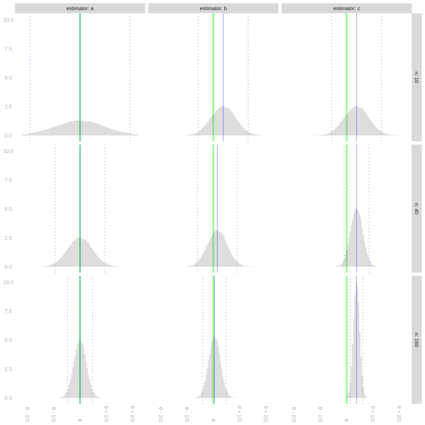
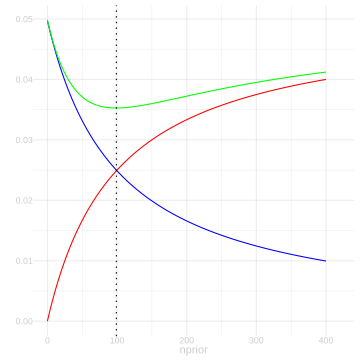
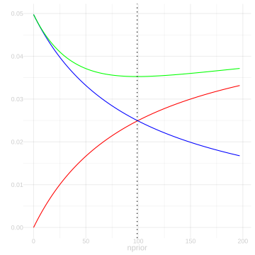
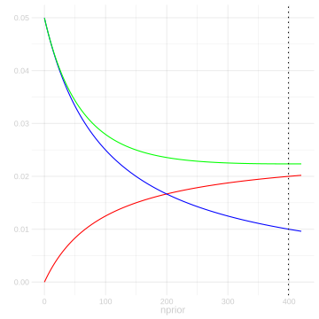
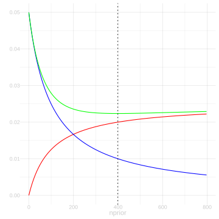

12 Homework: Comparing Estimators
$$ \newcommand{X}{} \newcommand{Y}{}
$$
\[ \DeclareMathOperator{\RMSE}{RMSE} \DeclareMathOperator{\mathop{\mathrm{E}}}{E} \DeclareMathOperator{\mathop{\mathrm{\mathop{\mathrm{V}}}}}{V} \DeclareMathOperator{\mathop{\mathrm{sd}}}{sd} \DeclareMathOperator{\mathop{\mathrm{\widehat{V}}}}{\widehat{V}} \DeclareMathOperator{\mathop{\mathrm{bias}}}{bias} \newcommand{\thetaprior}{\theta^{\text{prior}}} \newcommand{\nprior}{n^{\text{prior}}} \newcommand{\yprior}{y^{\text{prior}}} \]
Introduction
Summary
In our previous homeworks, we’ve focused mostly on calibration. We’ve talked about what our estimators’ sampling distributions look like, how to use them to calibrate interval estimates, and what happens when we do. In this one, what we’re really focusing on is the accuracy of our point estimators. We’ll talk about different ways a point estimator can be untrustworthy, like being biased or highly variable, using our first example of a estimator that actually is biased. A simple one, but one that people really do use. This’ll give us the opportunity to think a bit about how to choose between different estimators for the same estimation target.
After thinking a bit about what we might actually want from an estimator, which does involve an element of individual preference, we’ll take a moment to understand consistency, the one property that almost everyone agrees they do want an estimator to have. Maybe people put a little too much emphasis on this, since it’s really the bare minimum you could ask for. All that means is that if you’re willing to collect any amount of data, you can get as close to the estimation target as anyone might want. Unless you’re trying to estimate something really weird, you can afford to have higher standards. The good news is that when you try to show an estimator is consistent, you usually wind up showing a lot more than that. You need to use some pretty weird arguments to show an estimator is consistent without actually getting some quantitative information about how close it gets to the estimation target at different sample sizes.
The main idea we’ll be using to think about all this is our estimators’ root-mean-squared error—the square root of its mean-squared distance from the estimation target.1 This doesn’t tell us everything that the whole sampling distribution does, but it’s a lot easier to calculate, especially when we’ve got a complicated estimator or sampling scheme. As an example, we’ll carry out the missing step from Lecture 5’s variance calculation for a sample proportion when sampling without replacement.
We’ll conclude by returning to the familiar challenge of interval calibration. We’ll see that information about root-mean-squared error alone is enough to calibrate intervals so they get at least 95% coverage. We say this approach is conservative because we tend to have to sacrifice a bit of precision — we get wider intervals than necessary — to have greater faith that they do have the coverage probability we’re claiming. In this case, we get this ‘extra faith’ because we aren’t relying on our sampling distribution looking like the normal distribution or the bootstrap working. We’re just relying on our knowledge of mean-squared-error which, for an estimator we can prove to be unbiased, really just comes down to our ability to estimate our estimator’s variance. We’ll look into exactly how much precision this leaves on the table by comparing them to intervals based on normal approximation and the bootstrap using both a simple mathematical argument (Exercise 16.2) and fake-data simulation (Exercise 16.3).
The Point
Knowing this stuff will help you choose between estimators yourself, think about the choices others make, and communicate about these decisions and their implications. It’ll help us think about calibration later on, too, because when we know our point estimators are close to the estimation target, we can get away with using approximations like Taylor series to understand their sampling distributions.
Variance when Sampling Without Replacement
In Lecture 3, we talked about the distribution of a sample proportion when we sample without replacement. This is, admittedly, a long read. But one thing we can take away from it—and I’ll just tell here rather than asking you to work it out — is the probability distribution of \(Y_1\) when we make a single call and the joint distribution of \(Y_1, Y_2\) when we make two calls. Those are just special cases of the ‘Partially Marginalized’ distribution described in Lecture 3. Letting \(m_0\) and \(m_1\) be the number of zeros and ones in our binary population \(y_1 \ldots y_m\), these are the distributions.
| \(p\) | \(Y_1\) |
|---|---|
| \(\frac{m_0}{m}\) | 0 |
| \(\frac{m_1}{m}\) | 1 |
| \(p\) | \(Y_1\) | \(Y_2\) |
|---|---|---|
| \(\frac{m_0(m_0-1)}{m(m-1)}\) | 0 | 0 |
| \(\frac{m_0m_1}{m(m-1)}\) | 0 | 1 |
| \(\frac{m_0m_1}{m(m-1)}\) | 1 | 0 |
| \(\frac{m_1(m_1-1)}{m(m-1)}\) | 1 | 1 |
You can go ahead and cross out the \(Y_1\) in the first table and write in \(Y_i\), because this is the marginal distribution of every individual observation \(Y_i\) when we draw a sample without replacement of any size \(n\). You can cross out \(Y_1\) and \(Y_2\) in the second table and write in \(Y_i\) and \(Y_j\) for the same reason: it’s the joint distribution of any pair \((Y_i, Y_j)\) for \(i\neq j\) when we draw a sample without replacement of any size \(n\). This makes them a lot more useful.
To justify this, we can do a simple two-step thought experiment. We’ll think of drawing a sample without replacement as the process of shuffling a deck of cards labeled 1 … m, then drawing the first \(n\) cards off the top. Letting \(J_1\) be what the first card says, \(J_2\) what the second one says, and so on, our sample \(Y_1 \ldots Y_n\) is \(y_{J_1} \ldots y_{J_n}\). Here’s our argument.
No matter how many cards we’re going to draw, the distribution of the first card is the same. Same with the first two cards. Thus, what we’ve written above is the marginal distribution of \(Y_1\) and the joint distribution of \((Y_1,Y_2)\) when we make any number of calls \(n\).
If we’d pulled off the first \(n\) cards and then counted from the bottom instead of the top, we’d get the same distribution. They’re shuffled, after all. So the marginal distributions of \(Y_1\) and \(Y_n\) are the same and so are the joint distributions of \((Y_1,Y_2)\) and \((Y_n,Y_{n-1})\). The same thing would be true if we went through our top \(n\) cards in any order. Thus, the marginal distributions of \(Y_i\) are the same for all \(i\) and the joint distributions of \((Y_i,Y_j)\) are the same for all \(i \neq j\).
Now let’s use this to calculate the variance of our sample proportion \(\hat\theta=\frac{1}{n}\sum_{i=1}^{n}Y_i\). Most of the work is already done on this slide from Lecture 5.2 In that calculation, I used the following identity. It’s colored blue there to highlight it.
\[ \mathop{\mathrm{E}}\qty[ (Y_i - \mathop{\mathrm{E}}[Y_i])(Y_j - \mathop{\mathrm{E}}[Y_j]) ] = -\frac{\theta(1-\theta)}{m-1} \qfor i\neq j \]
But I didn’t actually show that it’s true. That’s what we’re going to do now. Let’s start by rewriting this expression so it’s a little easier to work with. Like this.
\[ \mathop{\mathrm{E}}\qty[ (Y_i - \mathop{\mathrm{E}}[Y_i])(Y_j - \mathop{\mathrm{E}}[Y_j]) ] = \mathop{\mathrm{E}}[Y_i Y_j] - \mathop{\mathrm{E}}[Y_i]\mathop{\mathrm{E}}[Y_j] \]
What’s nice about this second form is that using our tables above to calculate these expectations is easy. We actually have a row for \(Y_i\) in our marginal table and can easily add a row to our joint table for \(Y_i Y_j\). I’d like to ask you to calculate the thing, but since it’d probably take a litte arithmetic to manipulate what you get into the form \(-\frac{\theta(1-\theta)}{m-1}\) we used in lecture, I’m going to ask you to verify my calculation instead.
Simplifying this into the form \(-\frac{\theta(1-\theta)}{m-1}\) is a little bit of work. As usual, the trick is to give your two terms a common denominator and see what cancels.
I’ll save you the trouble, but I’ll ‘fold’ it like I usually do solutions, so if you’d like to try it on your own, you can without the solution staring you in the face. If you do just want to read it, expand the box by clicking on it.
Bias and Consistency
Using Prior Information
So far, we’ve exclusively talked about unbiased estimators. That is, estimators with the property that their expected value is equal to the estimation target. \[ \hat\theta \qqtext{ is called unbiased if } \mathop{\mathrm{E}}\qty[\hat{\theta}] = \theta. \] We say an estimator is biased if this isn’t true. To get a sense of what that means, let’s consider a simple example of a biased estimator. \[ \tilde{Y}_1 = \frac{1}{n+1}\cdot \qty{\frac{1}{2} + \sum_{i=1}^{n}Y_i} \]
This is a specific example of a more general estimator that integrates information from a prior study. Maybe a real study or maybe a study we’re imagining. Suppose we have \(\nprior\) observations \(\yprior_1 \ldots \yprior_{\nprior}\) from this study.3 \[ \thetaprior = \frac{1}{\nprior}\sum_{i=1}^{\nprior}\yprior_i. \]
Then averaging all our observations — from our current study and this prior one — gives us the following estimator.
\[ \begin{aligned} \tilde{Y}_{\nprior} &= \frac{1}{\nprior + n} \qty{\sum_{i=1}^{\nprior}\yprior_i + \sum_{i=1}^{n} Y_i} \\ &= \frac{1}{\nprior + n} \qty{ \nprior\thetaprior + n\bar Y } \end{aligned} \]
We treat these prior observations, and therefore their mean \(\thetaprior\), as deterministic. The simple example we started with, \(\tilde{Y}_1\), is a special case where we have a single prior observation \(\yprior_1 = \frac{1}{2}\).
Visualizating the Impact of Prior Information
Lets’s try to get a sense of how using prior information like this impacts our inference. We’ll do it visually. The plot below shows the sampling distributions of three estimators of a population mean \(\theta\) at three sample sizes \(n\): 10, 40, and 160. These are the estimators.
- The estimator \(\hat\theta_1 = \tilde{Y}_{\nprior}\) for \(\thetaprior=3/4\) and \(\nprior=10\) prior observations.
- The estimator \(\hat\theta_2 = \tilde{Y}_{n}\) for \(\thetaprior=3/4\) and \(\nprior=n\) prior observations. The bigger the sample, the more prior observations we use.
- The sample mean, \(\hat\theta_3 = \bar Y\).
As usual, the estimation target \(\theta\) is indicated by a green line, the sampling distribution’s mean by a solid blue line, and its mean plus and minus two standard deviations by dotted blue lines. In our first exercise, we’ll match estimators to pictures.
The Bias/Variance Tradeoff
As Figure 15.1 shows, there are multiple ways to be a not-so-great estimator. You can have no bias—or small bias—but so much variance that in many surveys (i.e. many draws from the sampling distribution) you’re way off. That’s what we see happening with ‘estimator a’ at sample size \(n=10\). You can have low variance but comparatively high bias, like we see with ‘estimator c’ at sample sizes \(n=40\) and \(n=160\). We often use root-mean-squared-error to summarize the typical magnitude of an estimator’s error.
\[ \RMSE(\hat\theta) = \sqrt{ \mathop{\mathrm{E}}\qty[ \qty{\hat \theta - \theta}^2 ] } \]
Famously, we can decompose its square into a sum of squared bias and variance.
\[ \begin{aligned} \mathop{\mathrm{E}}\qty[ \qty{\hat\theta - \theta}^2 ] &= \mathop{\mathrm{E}}\qty[ \qty{ \qty(\hat\theta - \mathop{\mathrm{E}}[\hat\theta]) + \qty(\mathop{\mathrm{E}}[\hat\theta] - \theta) }^2 ] \\ &= \mathop{\mathrm{E}}\qty[ \qty{ \hat\theta - \mathop{\mathrm{E}}[\hat\theta]}^2 ] + 2\mathop{\mathrm{E}}\qty[ \qty{ \hat\theta - \mathop{\mathrm{E}}[\hat\theta]} \cdot \qty{\mathop{\mathrm{E}}[\hat\theta] - \theta} ] + \mathop{\mathrm{E}}\qty[ \qty{ \mathop{\mathrm{E}}[\hat\theta] - \theta }^2 ] \\ &= \mathop{\mathrm{\mathop{\mathrm{V}}}}[\hat\theta] + 2 \times 0 + \underset{\text{bias}(\hat\theta)^2}{\qty{ \mathop{\mathrm{E}}[\hat\theta] - \theta }^2} \\ \end{aligned} \]
Just to check that you’re following the math, do this quick exercise.
Now here’s a real one. For the first time this semester, we’re talking about different estimators for the same estimation target. This exercise is an opportunity to think about how you might choose between them. I’ve asked you to answer a few questions and sketch a few things to help you think through the issues, but I’ve tried to leave this pretty open-ended because this really is a question without a single right answer. To some extent, it’s about what you think is important. You don’t have to stand by this choice for the rest of your life, so it’s okay if you miss something important and wind up changing your mind later, e.g. when you talk with your classmates or read the solution. It’s really just to get you started thinking about these kinds of choices and what you might want to consider when making them.
Solution
Let’s recall our formulas for the bias and standard deviation of \(\tilde{Y}_{\nprior}\) and sum their squares to get its mean squared error.
\[ \begin{aligned} \text{bias} &= \frac{\nprior(\thetaprior-\theta)}{\nprior+n} \\ \text{sd} &=\frac{\sqrt{n\theta(1-\theta)}}{\nprior+n} \\ \text{rmse} &= \sqrt{\frac{ (\nprior)^2 (\thetaprior-\theta)^2 + n\theta(1-\theta)}{(\nprior+n)^2}} \end{aligned} \]
The bias of this estimator increases in magnitude as \(\nprior\) grows. In particular, it grows more or less linearly when \(\nprior\) is small relative to \(n\) and level off then slows, taking the value \((\thetaprior-\theta)/2\) for \(\nprior=n\) and converging to \(\thetaprior-\theta\) as \(\nprior\) goes to infinity. The standard deviation of this estimator decreases as \(\nprior\) grows, taking on half the value it has for \(\nprior=0\) when \(\nprior=n\) and converging to zero as \(\nprior\) goes to infinity. The root-mean-squared error of this estimator, decreases then increases as \(\nprior\) grows.
I’m going to give you a long, detailed answer for the rest of this question. I wasn’t expecting anything like it from you, but I thought it might interest you and maybe clarify a few things you might’ve thought about when you approached the question yourself. I’ll start with precise plots of the bias, sd, and rmse curves for \(\thetaprior=.5\) and three values of \(\theta\): \(.6\), \(.55,\) and \(.525\). So that we can compare across different values of \(\theta\), I’ll plot each twice: once on a common set of axes (left) and once with the minimums of \(\text{rmse}\) aligned (right).






One salient feature is the minimum of the rmse curve, which I’ll indicate with a dotted line. We can find it by setting the mean squared error with respect to \(\nprior\) to zero and solving for \(\nprior\). We use the quotient rule \([f(x)/g(x)]' = [f'(x)g(x) - f(x)g'(x)]/g(x)^2\). Since we’re looking for a minimum, we can ignore the denominator. We want \(x=\nprior\) where \(f'(x)g(x) - f(x)g'(x) = 0\) for \(f(x) = x^2 (\thetaprior-\theta)^2 + n\theta(1-\theta)\) and \(g(x) = (x + n)^2\). \[ \begin{aligned} 0 &= f'(x)g(x) - f(x)g'(x) \\ &= 2x(\thetaprior-\theta)^2(x+n)^2 - 2x^2(\thetaprior-\theta)^2(x+n) - 2n\theta(1-\theta)(x+n) \\ &= 2x(\thetaprior-\theta)^2 (x+n)\qty{(x+n) - x} - 2n\theta(1-\theta)(x+n) \\ \end{aligned} \] which happens, cancelling the common factor of \(2n(x+n)\), for \(x=\theta(1-\theta)/(\thetaprior-\theta)^2\).
Another salient feature is the point where bias and standard deviation are equal, which is indicated by a crossing of the red and blue lines in the plots. We can solve for this as follows. \[ \frac{\nprior(\thetaprior-\theta)}{\nprior+n} = \frac{\sqrt{n\theta(1-\theta)}}{\nprior+n} \qqtext { where } \nprior = \sqrt{n\theta(1-\theta)} / (\thetaprior-\theta) \]
One interesting thing to notice is that, while both of these points shift to the right as \(\thetaprior\) gets closer to \(\theta\), the point where rmse is minimized shifts to the right faster. An implication of this that we can see in the plots is that choosing \(\nprior\) to minimize rmse will result in an estimator with a larger \(\text{bias}/\text{sd}\) ratio when \(\thetaprior\) is close to \(\theta\) than when it is far away. Why does this matter? Because the bigger the ratio of \(\text{bias}/\text{sd}\), the worse our interval estimators’ coverage probability will be. When this ratio is roughly 1.96, we’ll get about 50% coverage. We see that here in the slides when discussing implications of bias. So it tells us that choosing \(\nprior\) to minimize \(\rmse\) is not necessarily a good idea from an inferential perspective. When we do this, poor coverage isn’t a price we pay for choosing \(\thetaprior\) badly—it’s our ‘reward’ for choosing it well. In light of this, I think choosing \(\nprior\) to minimize \(\rmse\) is a bad idea. We could try to do something a bit more complicated like choosing \(\nprior\) to minimize \(\rmse\) subject to a constraint on the bias/sd ratio, e.g., \(\text{bias}/\text{sd} \le 1/2\), to ensure close-to-nominal coverage. But what I’d suggest is simpler: just set \(\nprior=0\) and use the sample mean.
All of this assumes we can actually choose \(\nprior\) to minimize \(\rmse\). It isn’t obvious that we can given that our \(\rmse\) formula involves the unknown population proportion \(\theta\), but you can do something a lot like that by minimizing an estimate of \(\text{rmse}\). People do this often, although typically in more complex estimation problems. The most popular technique for this is probably Cross-Validation, which we’ll talk about later in the semester. Stein’s Unbiased Risk Estimate is an interesting alternative. We won’t get there this semester, but it doesn’t require all that much background to understand, so take a look at the wikipedia page if you’re curious.
Consistency
We say an estimator is consistent if it converges to the estimation target as sample size increases to infinity. That’s being vague. There are a couple ways this is imprecise.
First, what does it mean to be the same estimator at different sample sizes? E.g., the definition of \(\hat\theta_2\) from Exercise 15.3 depends on \(n\), so is that ‘an estimator’? The resolution for this one is easy—if we really want to be precise, we explicitly specify an estimator for each sample size: we say ‘an estimator sequence’ is consistent instead of ‘an estimator’. When we say ‘an estimator’ is consistent, we expect the person we’re talking about understands what sequence of estimators we actually mean. This is just a language thing.
The second thing that’s imprecise is what it actually means for a random variable, like an estimator, to converge to something. It turns out that there are a lot of different, useful ways to think about this happening. One of the simpler versions is called convergence in mean square. A sequence of random variables \(Z_1,Z_2,Z_3,\ldots\) converges in mean square to a a random variable \(Z\), which is often but not necessarily a constant, if the root mean square difference between them, \(\sqrt{E[(Z_n - Z)^2]}\), gets arbitrarily small (i.e., converges to zero) as \(n \to \infty\). And we say an estimator \(\hat\theta\) is consistent in mean-square if it converges in mean square to the estimation target \(\theta\) as sample size \(n\) goes to infinity.
Here are a few exercises to get you thinking about what consistency can and can’t look like.
Convergence in Probability
Now let’s think about another notion of convergence. If an estimator’s sampling distribution ends up in the right location (\(\text{bias} \to 0\)) with arbitrarily little spread (\(\text{standard deviation} \to 0\)), then it makes sense that every draw from that sampling distribution will be close to the estimation target. Or almost every draw, anyway.
We tend to visualize our estimate as a single dot, e.g. the black dot below. That’s what it is. One number. But when we want to think about what estimates we could have plausibly gotten, we tend to think about the dots we’d get if we were to repeat our survey a hundred times or a billion, each time calculating an estimate the same way. The sampling distribution of our estimator. We can plot actual dots, like the purple ones below, or histogram them, to get a sense of what this looks like. Hopefully all this is familiar-verging-on-boring to you by now.

Whereas convergence in mean square is about the typical distance between these dots and our estimation target, convergence in probability is about the fraction of these dots that falls within a small distance \(\epsilon\). We say a random variable \(\hat\theta\) converges in probability to \(\theta\) if, for anyone’s idea of ‘sufficiently close’, the probability that \(\hat\theta\) is sufficiently close to \(\theta\) goes to one. \[ P(\lvert\hat\theta - \theta\rvert \le \epsilon) \to 1 \qqtext{ as } n \to \infty \qqtext{ for any } \epsilon > 0 \] Or equivalently, the probability that it isn’t sufficiently close goes to zero. That is, if \[ P(\lvert\hat\theta - \theta\rvert > \epsilon) \to 0 \qqtext{ as } n \to \infty \qqtext{ for any } \epsilon > 0 \]
If \(\hat \theta\) is an estimator and \(\theta\) is our estimation target, we say \(\hat\theta\) is consistent in probability if it converges in probability to \(\theta\).4
Convergence in mean square implies convergence in probability. Let’s use Markov’s inequality to see why.
Markov’s Inequality
Markov’s inequality says that the probability that a non-negative random variable \(X\) hits some threshold \(\epsilon\) is bounded by the ratio of its expected value and \(\epsilon\), i.e., \[ P(X \geq \epsilon) \leq \frac{\mathop{\mathrm{E}}[X]}{\epsilon} \]
Often, instead of using this to bound the random variable we’re interested in directly, e.g. \(X=|\hat\theta - \theta|\), we use it to bound the random variable’s square. \(|X| \ge \epsilon\) if and only if \(X^2 \ge \epsilon^2\), so the probability that \(|X| \ge \epsilon\) is the same as the probability that \(X^2 \ge \epsilon^2\). Applying Markov’s inequality to the random variable \(X^2\) gives us a bound in terms of \(X\)’s mean square which, in the specific case that \(X\) is \(|\hat\theta-\theta|\), is the mean squared error of the estimator \(\hat\theta\), \(\RMSE(\hat\theta)^2=\mathop{\mathrm{E}}[(\hat\theta-\theta)^2]\)
\[ P(X \ge \epsilon) = P(X^2 \ge \epsilon^2) \leq \frac{\mathop{\mathrm{E}}[X^2]}{\epsilon^2} \qqtext{ e.g.} P(|\hat\theta - \theta| \ge \epsilon) = P((\hat\theta - \theta)^2 \ge \epsilon^2) \leq \frac{\mathop{\mathrm{E}}[(\hat\theta - \theta)^2]}{\epsilon^2} \]
This tells us that, if the root-mean-squared error of \(\hat\theta\) goes to zero, then the probability that \(\hat\theta\) is any distance \(\epsilon\) away from \(\theta\) goes to zero, i.e., consistency in mean-square implies consistency in probability.
Plan. We’re going to conclude with a few exercises. First, we’re going to prove Markov’s inequality. It’s good practice working with expectations and probabilities. Then, we’re going to look at what Markov’s inequality actually tells us about the sampling distribution of our estimator \(\hat\theta\) in the terms we’re used to—we’re going to use it to calibrate an interval estimate. And we’ll see how calibrating this way compares to calibration using the bootstrap and normal approximation.
Proving Markov’s Inequality
The usual proof of Markov’s inequality is based on a few simple observations.
- The expectation of the indicator variable \(1_{\ge t}(X)\) is the probability that \(X\) exceeds \(t\), \(P(X \ge t)\).
- If we have some function of \(u\) that’s always larger than \(1_{\ge t}\), i.e., one satisfying \(u_t(x) \ge 1_{\ge t}(x)\) for all \(x\), we know that \(\mathop{\mathrm{E}}[u_t(X)] \ge \mathop{\mathrm{E}}1_{\ge t}(X)\) for any random variable \(X\). If it’s always larger for non-negative \(x\), then \(\mathop{\mathrm{E}}[u_t(X)] \ge \mathop{\mathrm{E}}[1_{\ge t}(X)]\) for any non-negative random variable \(X\).
- The function \(u_t(x)=x/t\) is such a function.5
Markov’s Inequality and Interval Estimation
So far, when we’ve calibrated interval estimates using our estimator’s standard deviation, we’ve relied on normal approximation. In effect, we’ve been using a formula for \(P(\lvert\hat\theta - \theta\rvert \le \epsilon)\) that’s accurate when \(\hat\theta\) has a normal distribution and close enough when its distribution is close enough to normal. In this problem, we’re going to think about doing without this reliance on approximate normality.
Let’s consider \(\hat\theta\), an unbiased estimator of \(\theta\) with standard deviation \(\sigma\), so the normal approximation to the distribution of \(\hat\theta-\theta\) has the density \(f_{0,\sigma}(x)\) below.
\[ P\qty(|\hat\theta - \theta| \le \epsilon) \approx \int_{-\epsilon}^{\epsilon} f_{0,\sigma}(x) dx \qfor f_{0, \sigma}(x) = \frac{1}{\sqrt{2\pi}\sigma} e^{-x^2/2\sigma^2} \]
The reason we’ve been talking about interval estimators of the form \(\hat\theta \pm 1.96 \sigma\) is that, if this approximation were perfect, these interval estimators would have 95% coverage. That is, it’d be true that \(P(|\hat\theta-\theta| \le 1.96 \sigma) = .95\). And if the approximation is pretty good, we should still expect coverage close to that. But suppose we’re not confident that it is. Markov’s inequality allows us to calibrate interval estimates in terms of our estimator’s standard deviation without any caveats about its sampling distribution being approximately normal. Let’s give it a shot.
Now let’s try this out on the NBA data we’ve been working with recently.
prior.obs = read.csv("https://qtm285-1.github.io/assets/data/nba_sample_2.csv")
sam = read.csv("https://qtm285-1.github.io/assets/data/nba_sample_1.csv")
pop = read.csv("https://qtm285-1.github.io/assets/data/nba_population.csv")
indicator = function(W,L,...) { W / (W+L) > 1/2 }
library(purrr)
Y.prior = prior.obs |> pmap_vec(indicator)
Y = sam |> pmap_vec(indicator)
y = pop |> pmap_vec(indicator)
n = length(Y)
m = length(y)
theta = mean(y)The sample \(Y_1 \ldots Y_{100}\) we’ll use is drawn with replacement from a population \(y_1 \ldots y_{539}\) of indicators. These indicators—one for each of the 539 players who played in the NBA in 2023—are one if the player’s team won more than half the games they played in and zero otherwise.
We’ll consider two point estimators. The first is the sample mean, \(\hat\theta=\bar{Y}\). And the second is the mean-with-prior-observations estimator \(\tilde{Y}_{100}\) we talked about in Exercise 15.2, using 100 prior observations from what we called ‘your sample’ in the Week 1 Homework.
I like to say ‘typical distance’ and ‘typical error’ instead of ‘root-mean-squared distance’ and ‘root-mean-squared error’ because it’s shorter, gets the essential idea across, and doesn’t have a technical meaning that might conflict with my use of it this way like ‘average distance’ would. I’ve written it out in full here, but you may find me saying ‘typical distance’ now and then when I speak.↩︎
Look at the ‘Sampling without Replacement’ tab.↩︎
Sometimes we call these pseudo-observations. This particular interpretation, in which we think of them as coming from a prior study, can be used to derive this estimator from Bayesian principles.↩︎
This is nonstandard terminology. What I’m calling ‘consistency in probability’ is usually called weak consistency for reasons that are a little hard to explain without a fair amount of background in topology and measure-theoretic probability. If you say ‘consistent in probability’, people who usually say weak consistency will know what you mean and maybe even follow your lead, but it may take them a second. ‘Convergence in probability’ is standard terminology, for what it’s worth.↩︎
If you’re not convinced, sketch the two functions on the same axes. Sketching usually helps.↩︎
\(2\ \text{point estimators} \times 3\ \text{interval calibration methods}=6\ \text{interval estimators}\)↩︎